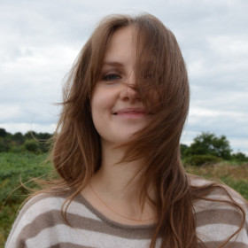

 |
Ieva KazlauskaitePostdoc (Research Assistant/Associate) |
In June 2020, I joined Mark Girolami's group at the Civil Engineering Division in the Department of Engineering at the University of Cambridge. My research is funded by the ICONIC grant. Prior to that, I was an Engineering Doctorate (equivalent to a PhD) student at the University of Bath, UK supervised by Neill D. F. Campbell and Carl Henrik Ek. During my PhD I spent 3 years in industry as a Research Engineer / Engineering Doctorate student at the Frostbite Physics Team at Electronic Arts where I was supervised by Tom Waterson. I hold an undergraduate degree in Mathematics from Durham University, UK.
- I. Ustyuzhaninov*, I. Kazlauskaite*, C. H. Ek, and N. D. F. Campbell. Monotonic Gaussian Process Flows. International Conference on Artificial Intelligence and Statistics (AISTATS). 2020. Available as arXiv preprint arxiv:1905.12930.
- I. Ustyuzhaninov* , I. Kazlauskaite* , M. Kaiser, E. Bodin, N. D. F. Campbell, and C. H. Ek. Compositional uncertainty in deep Gaussian processes. The Conference on Uncertainty in Artificial Intelligence (UAI). 2020. Available as arXiv preprint arxiv:1909.07698.
- E. Bodin, M. Kaiser, I. Kazlauskaite, Z. Dai, N. D. F. Campbell, and C. H. Ek. Modulating Surrogates for Bayesian Optimization. International Conference on Machine Learning (ICML). 2020. Available as arXiv preprint arxiv:1906.11152.
- I. Kazlauskaite, C. H. Ek, and N. D. F. Campbell. Gaussian Process Latent Variable Alignment Learning. International Conference on Artificial Intelligence and Statistics (AISTATS). 2019. Available as arXiv preprint arxiv:1803.02603. [Poster]
- O. Mikheeva, I. Kazlauskaite, H. Kjellström, and C. H. Ek. Bayesian nonparametric shared multi-sequence time series segmentation. In Women in Machine Learning (WiML). 2019. Available as arXiv preprint arxiv:2001.09886.
- I. Kazlauskaite, I. Ustyuzhaninov, C. H. Ek, and N. D. F. Campbell. Sequence Alignment with Dirichlet Process Mixtures. Workshop on Bayesian Nonparametrics at NeurIPS. 2018. Available as arXiv preprint arxiv:1811.10689.
- I. Kazlauskaite, C. H. Ek, and N. D. F. Campbell. Learning Warpings from Latent Space Structures. Workshop on Learning in High-dimensions with Structure at NIPS. 2016.